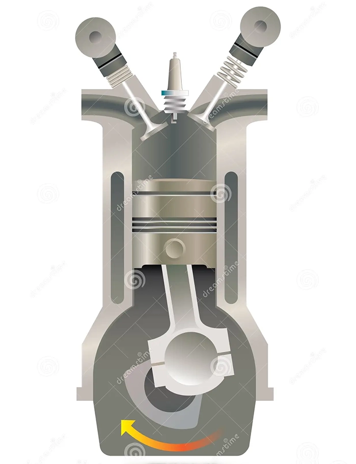

V8 Symfonin av Kraft & Effekt
Kolven: En Nyckel till Effektiv Drift
En V8-motor är en typ av internförbränningsmotor med åtta cylindrar, placerade i två rader i en V-form.
Denna motorlayout ger hög effektivitet och prestanda.
V8-motorer är kända för att leverera betydande kraft och vridmoment, vilket gör dem populära i många olika fordonstyper,
inklusive bilar, lastbilar och sportbilar.
Deras jämnt fördelade kraft gör dem lämpliga för både låga och höga hastigheter.
Dessutom ger V8-motorer en distinkt och tillfredsställande ljudprofil tack vare den karakteristiska rytmiska pulsen från dess åtta cylindrar.
Med avancerad teknik och designförbättringar fortsätter V8-motorer att vara en av de mest eftertraktade motoralternativen för prestandaentusiaster och fordonsälskare världen över.

Kolvarna i en V8-motor är en av de centrala komponenterna som spelar en avgörande roll för dess funktion. En V8-motor består av åtta cylindrar, där varje cylinder har en kolvar som rör sig upp och ner i den.
Kolvarna är cylindriska metallcylindrar som är placerade inuti varje cylinder i motorn. Deras huvudsakliga funktion är att omvandla den linjära rörelsen från förbränningen av bränsle och luft till roterande rörelse genom vevaxeln.
Kolvarna är förbundna med vevstakar som är kopplade till vevaxeln, och när bränslet antänds i cylindern skapas en kraft som pressar kolven nedåt.
Denna rörelse överförs sedan genom vevstaken till vevaxeln, vilket driver rotationen av motorn.
Kolvarna måste vara tillverkade av starka material som kan stå emot höga temperaturer och tryck som genereras under förbränningsprocessen.
Vanligtvis tillverkas de av aluminium eller stål med en speciell beläggning för att förbättra deras slitstyrka och värmetålighet.
En viktig egenskap hos kolvarna är deras tätning mot cylinderfodret för att förhindra läckage av bränsle och komprimerad luft.
För att uppnå detta har kolvar vanligtvis tätningar eller ringar som placeras runt dem för att skapa en tät passform mot cylinderväggen.
Kolvar i en V8-motor är avgörande för dess prestanda och effektivitet, och deras utformning och materialval spelar en viktig roll för att säkerställa att motorn fungerar smidigt och tillförlitligt över tiden.

⬅tillbaka
kolven➡